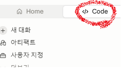

Git 사용법 초보자 가이드 (1) 개념과 기본 세팅 — Git이 뭔지도 몰랐던 내가 하루 만에 블로그를 만들기까지
2026. 7. 12.
저는 어제까지만 해도 Git이 뭔지 전혀 몰랐습니다. 그런데 하루 만에 GitHub 저장소를 만들고, 제 이름으로 된 블로그까지 띄웠어요. 저처럼 아무것도 몰라도 그대로 따라 할 수 있도록, 제가 했던 순서를 정리해봤습니다. 이번 1편에서는 기본 개념과 세팅까지만 다뤄요. GitHub 계정 만들기와 실제 연결은 다음 편에서 이어집니다.
0. 준비물
- Windows가 설치된 컴퓨터
- 인터넷 연결
- 이메일 주소 하나 (계정 만들 때 필요)
1. Claude 설치하고 로그인하기
저는 이 모든 과정을 Claude라는 AI 도우미와 대화하면서 진행했어요. Claude는 채팅만 하는 게 아니라, 제 컴퓨터의 명령창(터미널)에 명령어를 대신 실행해주고, 파일을 만들거나 수정해줄 수 있어요. 그래서 저는 어려운 명령어를 몰라도 "이렇게 해줘"라고 말만 하면 됐어요.
- 브라우저에서 claude.ai 접속
- 계정이 없으면 이메일로 가입, 있으면 로그인
- 컴퓨터에서 직접 파일/터미널을 다루게 하려면 Claude Desktop(또는 Claude Code) 앱을 설치 — 사이트 안내에 따라 다운로드 후 설치 프로그램 실행
- 설치 후 로그인하면 채팅창이 뜸 — 여기서부터 아래 과정을 Claude에게 하나씩 요청하면 됩니다
Home이 아니라 Code로 들어가야 해요
저는 처음에 계속 Home 화면에서만 대화를 했었어요. 그런데 컴퓨터의 파일을 만들고 터미널 명령어를 실행하려면 Code 쪽으로 들어가야 해요. 화면 위쪽에 아래 그림처럼 Home / Code 탭이 있으니, 꼭 Code를 눌러서 시작하세요.

2. 이 시리즈를 읽는 법: "바이브 코딩"이란?
본격적으로 시작하기 전에 하나만 짚고 갈게요. 이 글에는 앞으로 회색 박스 안에 명령어 코드가 여러 번 나와요. 그런데 저는 이 코드를 직접 외우거나 타이핑하지 않았어요. 그냥 Claude에게 말로 시켰더니 알아서 실행해줬어요.
요즘은 이런 방식을 "바이브 코딩(vibe coding)"이라고 불러요 — 코드를 직접 짜는 대신, AI에게 자연어로 "이렇게 해줘"라고 말하면 AI가 코드를 대신 작성·실행하고, 사람은 결과가 원하는 대로 나오는지만 확인하는 방식이에요.
그래서 앞으로 각 단계마다 이렇게 구성했어요:
🎨 바이브 코딩으로: Claude에게 뭐라고 말하면 되는지
🔍 궁금하다면: 그 말을 들은 Claude가 실제로 어떤 명령어를 실행하는지, 그게 무슨 뜻인지
코드 부분은 몰라도 전혀 상관없어요. 이해하고 싶은 만큼만 읽으시면 됩니다.
3. 컴퓨터 기본기: C드라이브와 폴더
본격적으로 시작하기 전에 몰라도 되는 척 넘어가지 않고 짚고 갈게요.
- C드라이브: 내 컴퓨터의 메인 저장 공간 이름이에요. 파일 탐색기를 열면 왼쪽에 "로컬 디스크 (C:)"라고 보여요.
- 폴더 만들기: 원하는 위치(예: 바탕화면이나 문서 폴더)에서 빈 곳에 마우스 오른쪽 클릭 → 새로 만들기 → 폴더
- 파일 탐색기 여는 법: 키보드에서
윈도우 키 + E, 또는 화면 아래 작업표시줄의 폴더 모양 아이콘 클릭
저는 문서(Documents) 폴더 안에 작업 폴더들을 만들었어요. 꼭 여기일 필요는 없고, 나중에 기억하기 쉬운 위치면 됩니다.
4. 터미널(명령창)이 뭔가요?
터미널은 마우스 클릭 대신 글자로 된 명령어를 입력해서 컴퓨터에 일을 시키는 화면이에요. Windows에서는 PowerShell이라는 프로그램을 많이 써요.
여는 법: 시작 메뉴(윈도우 키) 누르고 "PowerShell"이라고 타이핑하면 검색되어 나와요.
다만 앞서 말씀드렸듯, 이 글에 나오는 명령어들은 바이브 코딩으로 Claude에게 시킨 거라 직접 타이핑하지 않았어요. 그래도 뭘 하고 있는 건지 알고 싶어서, 명령어와 뜻을 이 글에 다 적어둡니다.
5. Git이 뭔가요, 설치하기
Git은 파일이 바뀐 이력을 기록해주는 프로그램이에요. 코드나 글을 계속 고쳐 쓰다 보면 "예전 버전으로 되돌리고 싶다", "언제 뭘 바꿨는지 보고 싶다" 같은 순간이 오는데, 그럴 때를 위한 도구예요.
🎨 바이브 코딩으로: Claude에게 "내 컴퓨터에 Git이 설치되어 있는지 확인해줘"라고 말하면 확인해줘요. 설치가 안 되어 있으면 설치까지 부탁하면 돼요.
🔍 궁금하다면: 실제로 어떤 명령어일까?
이미 설치되어 있는지 확인하는 명령어예요.
git --version버전 번호가 뜨면 이미 설치된 거예요. 안 뜨면 git-scm.com에서 내려받아 설치 프로그램을 실행하면 됩니다 (설치 중 나오는 옵션들은 거의 다 기본값 그대로 "다음"만 눌러도 돼요).
저장(Ctrl+S)과 커밋(commit)은 달라요. 저장은 지금 상태를 덮어쓰는 거고, 커밋은 "이 시점의 상태를 사진처럼 찍어서 기록으로 남기는 것"이에요.
6. Git에게 "나는 누구다"를 알려주기
커밋을 할 때마다 이름/이메일이 기록에 함께 남기 때문에, 딱 한 번만 등록해두면 돼요.
🎨 바이브 코딩으로: Claude에게 "Git 사용자 이름을 OOO, 이메일을 OOO로 설정해줘"라고 말하면 등록해줘요.
🔍 궁금하다면: 실제로 어떤 명령어일까?
git config --global user.name "내 이름"
git config --global user.email "내 이메일"여기서 헷갈렸던 것: 이게 "초기화"인가요?
아니에요! 이 설정(config)은 "이 컴퓨터에서 커밋할 때는 항상 이 이름/이메일을 써라"는 전역 규칙일 뿐이에요. 저장소(repository)는 완전히 다른 개념으로, 특정 폴더 하나를 "여기서부터 이력을 관리하겠다"고 선언하는 거예요.
비유하면: config 설정은 "도장을 새로 파서 등록해둔 것"이고, 저장소를 만드는 건 "그 도장을 실제로 쓸 서류철(폴더)을 여는 것"이에요.
커밋 개념이 아직 헷갈린다면 Git 커밋이 뭔가요? 글에서, "바이브 코딩"이라는 말 자체가 궁금하다면 바이브 코딩이란 무엇인가 글에서 더 깊게 다뤘어요.
여기까지가 "시작하기 전 기본기"예요. 다음 편에서는 GitHub 계정을 만들고, SSH로 안전하게 연결하는 방법을 다뤄볼게요.